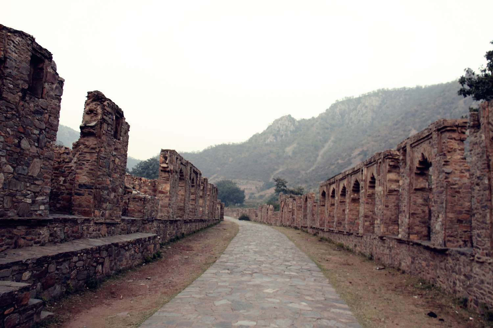
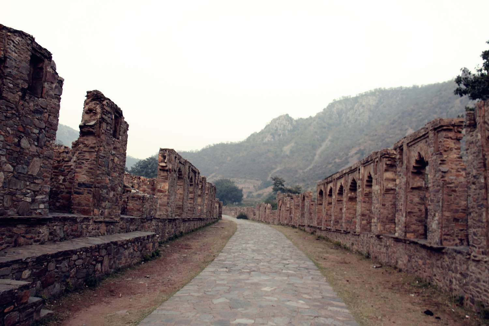

Bhangarh: the most haunted fort in India
As we drove up to the fort of Bhangarh in Alwar district of Rajasthan, from the Sariska Tiger Reserve, we passed by the Ajabgarh fort. Since entry into Bhangarh is restricted after sunset, we were in a hurry. I didn’t climb up the Ajabgarh fort, but I explored its base. A local lad grazing sheep told me that there was nothing that I would be able to see from below except the four walls. If I had known its significance in the destiny of the fort I was going to, I would have made more of an effort. The drive to Bhangarh fort was eerie. We passed through a village that was ostensibly inhabited. The main road was lined with the ruins of once-beautiful havelis. Children were seated in front of intricately carved wooden doors that had large rusted locks.
Fort History
Most people are of the belief that Bhangarh Fort is haunted and there is no dearth of tales that help in amplifying the mystery that is Bhangarh. Venturing into the fort after sunset is nothing short of an act of bravery as it is supposed to be a centre for paranormal activity and the Archaelogical Survey of India therefore has prohibited people from visiting the Bhangarh Fort at night. Of the many Bhangarh stories that the locals like to indulge in, the most popular is that of Emperor Madho Singh who built the city after attaining the approval of Guru Balu Nath, an ascetic who used to meditate there. The saint gave his approval on the condition that the shadow of the Emperor’s palace should never fall on his retreat. If in case it did, the city would crumble into ruins. Once the construction was completed, the retreat of Guru Balu was unfortunately shadowed by the palace. Having incurred the saint’s wrath, Bhangarh immediately transformed into a cursed city and could never be rebuilt as no structures ever managed to survive in it. It is interesting to note that the tomb of Guru Balu Nath can still be found among the ruins.
THE FORT AND ITS PREMISES
Inside the Bhangarh fort premises, one can find ruins of temples, palaces and havelis. The fort has four entry points in addition to the main gate – the Lahori Gate, the Ajmeri Gate, the Phulbari Gate and the Delhi Gate. The fort, although in ruins, still looks majestic, and exudes a sense of calmness to augment the green surroundings. At the fort’s main entrance there are a number of Hindu temples. The prominent temples are Gopinath Temple, Someshwar Temple, Keshav Rai Temple, Mangla Devi Temple and Ganesh Temple. These temples are a sublime example of architecture and workmanship of the 17th century. All the temples are in Nagara style of architecture. There is also the Gopinath Temple which is built above a 14ft raised plinth, with exquisite carvings done on the stones. The temple complex also houses the residence of the head priest, called the Purohitji Ki Haveli. Inside the fort precincts, there are a number of grand havelis in ruins; prominent among them is the Nartakiyon Ki Haveli, which was the house of the dancing girls. There is also the market place, with ruins of the royal palace standing at the extreme end of the fort’s limit. The royal palace said to have seven storey, however now only four of it remains.